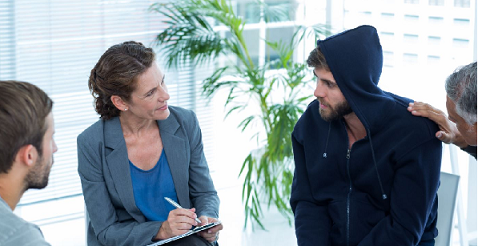

Nosotros

Centro Rehabilitación Nvo. Casas Gdes. A.C. Es una institución sin fines de lucro, dedicada al tratamiento y rehabilitación de pacientes enfermos de alcoholismo y drogadicción, sin importar edad, posición social o credo.
Proporciona desintoxicación, casa, comida y vestido así como psicoterapia grupal, terapia ocupacional y terapia espiritual basada en los doce pasos de A.A Y N.A durante la estancia de tres meses .
Mision
Aumentar la auto-estima del paciente,
mejorar su calidad de vida.
Consolidar un nuevo comportamiento.
Rescatar los valores individuales y sociales de la persona.
Promover la comunicación, el respeto y el amor en la familia.
Vision
Tener un centro de rehabilitación auto-sustentable capaz de proporcionar a la sociedad un servicio de alta calidad, con excelente comunicación, terapias innovadoras, un equipo moderno, infraestructura sólida y una administración profesionales. procuración de recursos